自分の書いたコードで、
本物のバスが街を走る。
深谷市のコミュニティバス「くるリン」は、この研究室と自動運転技術開発センターが開発した自動運転バスです。センサの取り付けからAI、安全設計、乗客を乗せた公道運行まで、大学の中で全部やっています。
写真：埼玉工業大学（2025年、深谷市）
この研究室でできること
教科書の中の自動運転ではなく、ナンバーの付いた本物のバスで研究します。ソフトだけ・ハードだけではなく、車両が街を走るまでの全部に手が届くのが、この研究室の一番の特徴です。
-
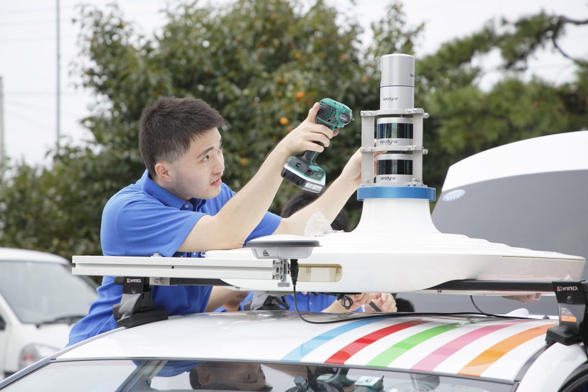
01本物の車を、自分で動かす
LiDAR・カメラ・レーダーを取り付け、オープンソースの自動運転ソフト Autoware を載せ、テストコースと公道で走らせます。センサから制御まで、ブラックボックスがありません。
-
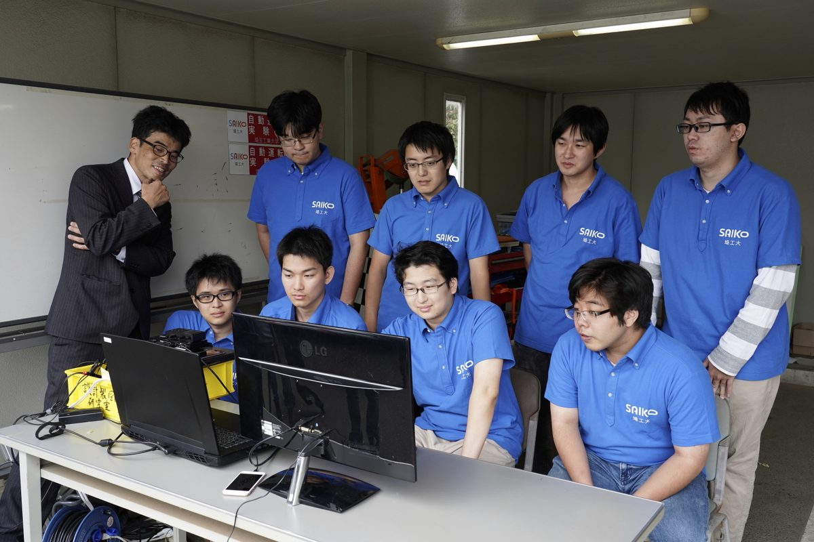
02走行データでAIを鍛える
バスが記録した8,000本以上の走行ログ（LiDAR、4Dレーダー、カメラ、GNSS/IMU、車両CAN）で、拡散モデルによる経路計画や視覚言語行動モデルを学習・比較します。国のスパコン ABCI も使います。
-
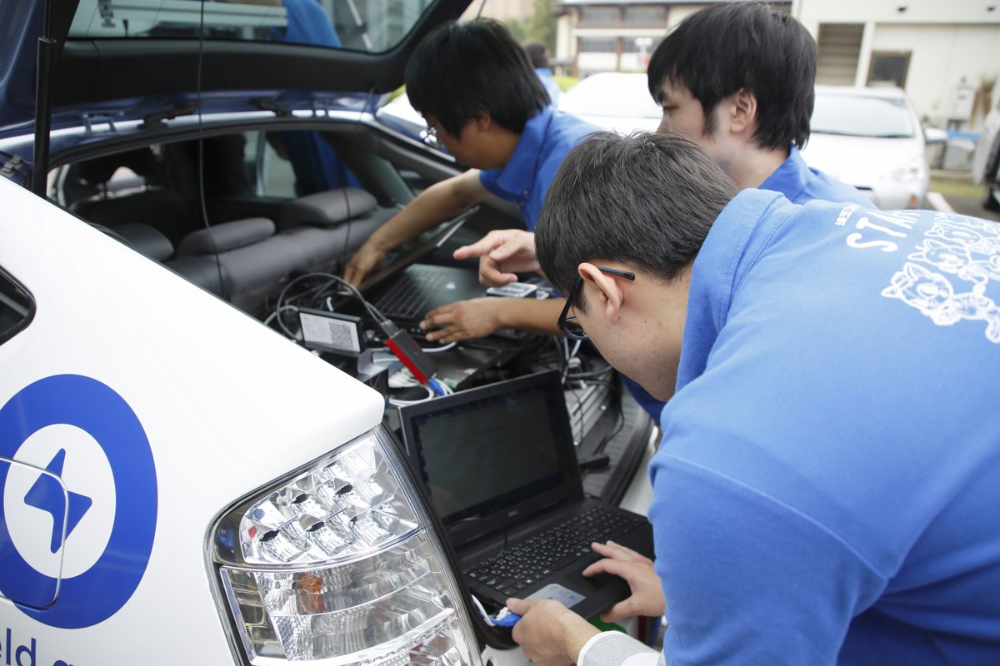
03「安全」を設計する
LiDARとGNSSの自己位置推定を街の中で切り替える、センサの故障を検知する、ソフトが止まっても効く非常停止を用意する。人を乗せる車だからこそ、安全設計そのものが研究テーマです。
-
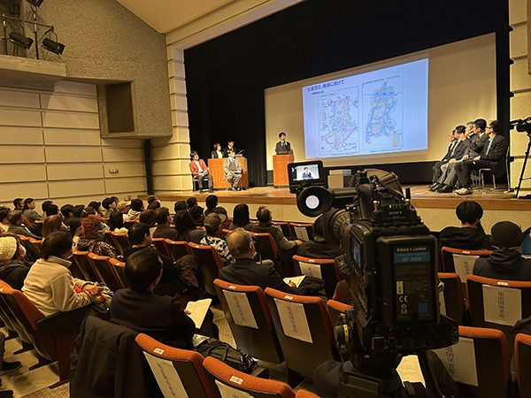
04街と一緒に社会実装する
深谷市・国土交通省・バス事業者と組んで、乗客を乗せて走らせます。試乗会、小中学生への特別授業、バスサミットなど、研究が社会に届く場面に学生も立ち会います。
大学で開発してきた自動運転バス
2019年のマイクロバスから始まり、大型路線バス、水陸両用バス、そして市のコミュニティバスへ。国・県・市・財団の支援を受けて、5台の自動運転バスの開発に参加してきました。
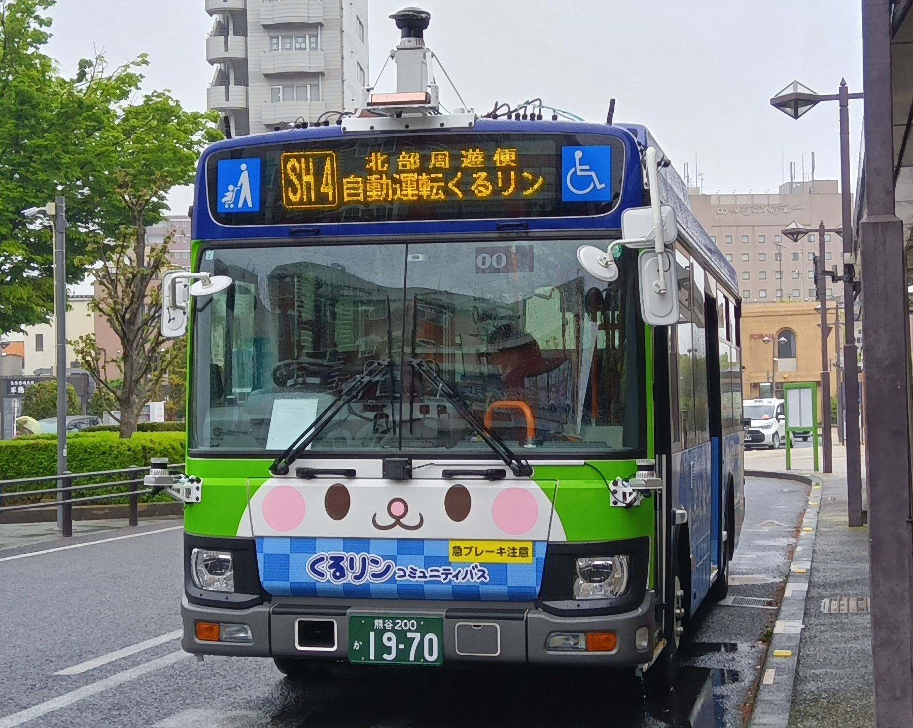
くるリン（いすゞ エルガミオ）2025年4月〜 深谷市コミュニティバス。全線37 kmを自動運転（レベル2）で運行 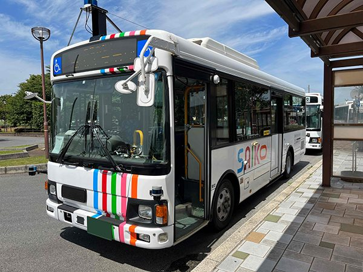
大型路線バス（日野 レインボウⅡ）2020年〜。県内初の大型自動運転バスの営業運行。2023年には東京・西新宿の公道を走行 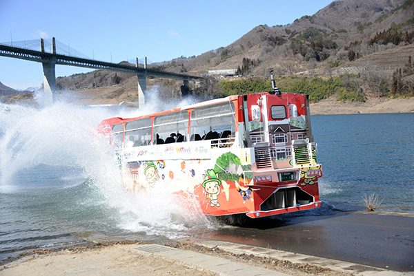
水陸両用バス（八ッ場にゃがてん号）2022年。陸上を自動運転し、湖に入って自動航行・障害物回避・上陸まで。世界初 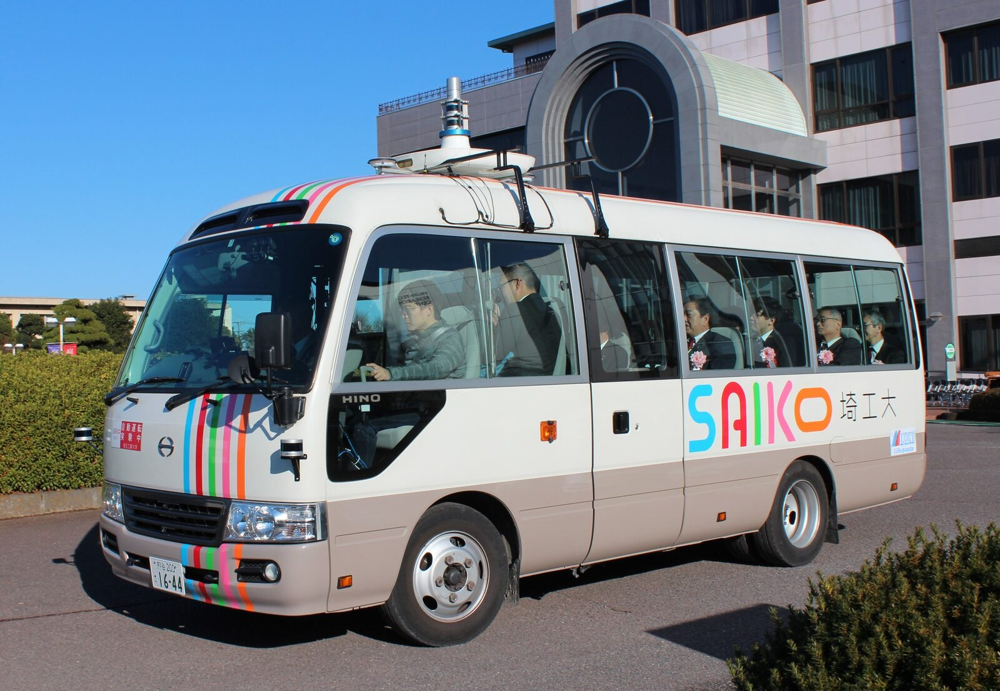
マイクロバス（日野 リエッセⅡ）2019年8月〜。最初にAutowareを実装した1台目。2021年には深谷市「論語の里循環バス」として県内初の自動運転バスの営業運行 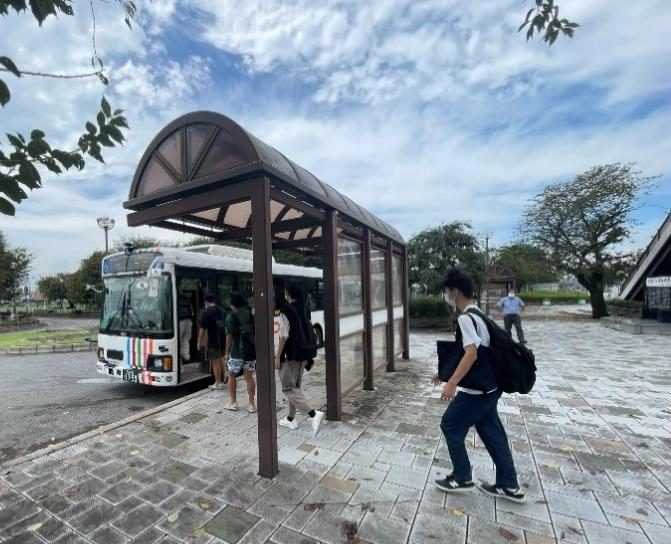
自動運転スクールバス2022年〜。私立大学初。岡部駅と大学の間の公道を自動運転で学生を送迎。入学式でも新入生を運んだ 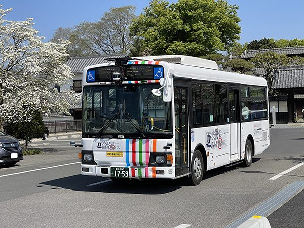
深谷の街を走る2024年。渋沢栄一 新一万円札発行記念イベントで、市役所から記念館などを巡る体験ツアーを運行
走らせるほど、賢くなる
くるリンは運行のたびに、センサと車両の記録（rosbag）を残しています。この研究室の強みは、この「本物の街の、本物の運行データ」を自分たちで持っていることです。
データはそのまま研究テーマになります。どの区間で自動運転が途切れたか、なぜ人が介入したか、どんな場面で経路がふらつくか。ログを読み、原因を突き止め、直して、また走らせる。そのサイクルを、学部の卒業研究から回せます。
- LiDAR・4Dレーダー・カメラ・GNSS/IMU・車両CANを同期記録
- 8,000本以上、約17 TB。日付・場所・車両で引ける索引を整備
- 学習型の経路計画（拡散モデル、視覚言語行動モデル）の学習・評価に活用
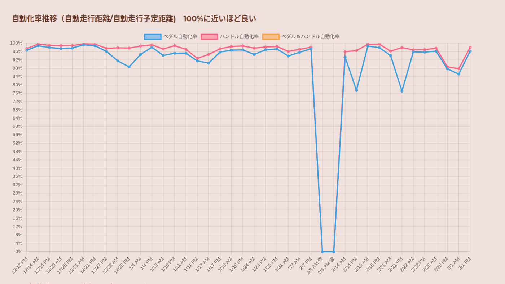
くるリンの自動化率（自動走行距離 ÷ 自動走行予定距離）の推移。ほとんどの日が100%近くで、落ち込んだ日はその原因を調べる対象になる。毎便の記録は くるリン自動化率グラフ で公開している。
学生の3年間
3年生の後期から研究室に入り、卒業研究で自分のテーマを持ちます。大学院に進めば国際会議での発表が目標になります。現在は学部4年生14名、3年生17名、博士課程3名が在籍しています。
-
3年生
ゼミで自動運転の基礎を身につけます。Linux、ROS 2、Autoware、Python と C++。実験車で「動かしてみる」ところまで。
- センサの取り付けとキャリブレーション
- 走行ログの再生と可視化
- 先輩の卒業研究の手伝い
-
4年生
卒業研究。実車と走行データを使って、自分のテーマを一つ持ちます。最近のテーマの例：
- 見通しの悪い交差点を分散カメラで安全に通過する
- LiDARとGNSSの自己位置推定の切り替えを賢くする
- 走行ログから学習する経路計画
- 耳の形による生体認証（スマホのロック解除）
-
大学院
研究を国際会議や論文誌に出します。博士課程の学生は自動運転技術開発センターの開発にも中心メンバーとして加わります。
- IEEE IECON など国際会議での発表
- 国・自治体・企業との共同研究
- 研究室出身の博士2名が研究員として開発を続けている
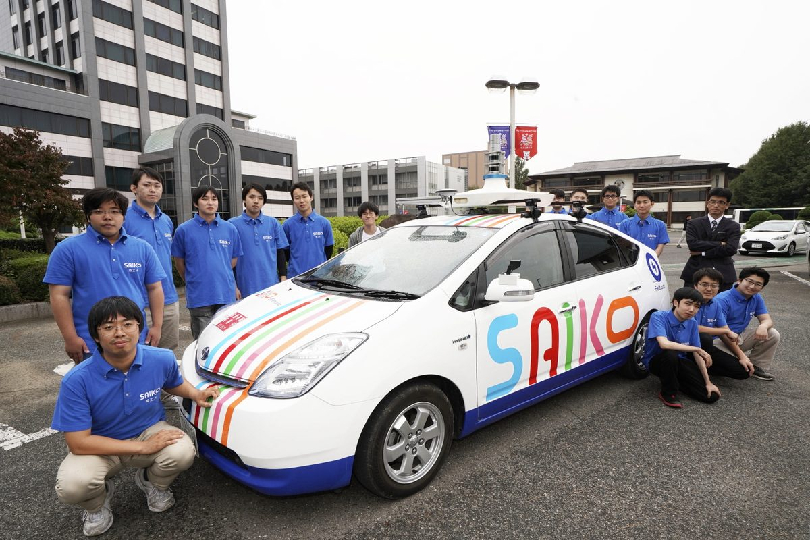
研究室のメンバー実験車と（2019年） 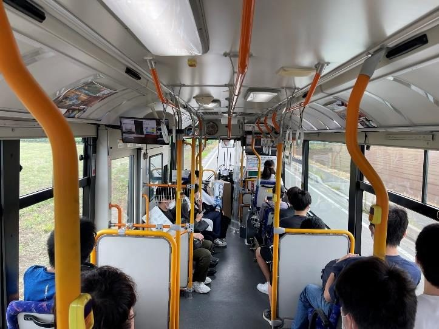
自動運転スクールバスの車内自分たちが開発したバスで通学する（2022年） 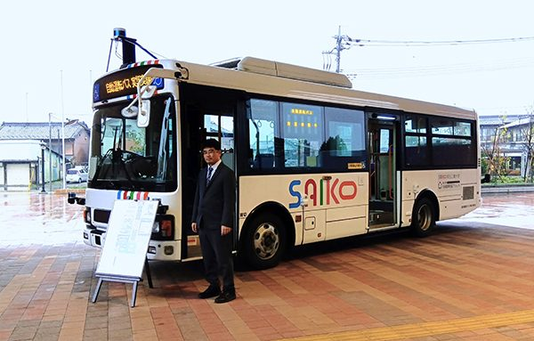
小中学生への特別授業「自動運転のある未来社会を考える」（2023年、深谷市）
これまでの歩み
- マイクロバス（日野 リエッセⅡ）にAutowareを実装。自動運転バス開発の第一歩
- 県内初、自動運転バスの営業運行を開始
- 県内初、大型自動運転バスの営業運行を開始
- 世界初、水陸両用バスの無人運転・運航技術の開発に成功世界初
- 私立大学初、大型自動運転バスをスクールバスに導入
- 東京・西新宿の公道で大型自動運転バスを運行
- 深谷市の小中学生に「自動運転のある未来社会を考える」特別授業
- 自動運転技術開発センターを強化
- 日本初、次世代燃料リニューアブルディーゼルの自動運転バス試乗会日本初
- 深谷市コミュニティバス「くるリン」の自動運転運行を開始
- くるリン全線37 kmの自動運転運行を実現（国内最長級）
- 深谷バスサミットを開催
教員
渡部 大志（わたべ だいし）教授
工学部 情報システム学科／大学院 工学研究科 情報システム専攻
副学長（産学連携担当）／自動運転技術開発センター センター長
AIによる画像認識を用いた自動運転と生体認証の研究教育を行っています。2018年末から自動運転バスの開発を率い、2019年に設立された自動運転技術開発センターの中核として、深谷市をはじめ各地で自動運転バスの社会実装を進めてきました。国土交通省の自動運航船の安全基準を検討するWGの委員や、ISO/IEC JTC 1/SC 37（生体認証の国際標準）の委員も務めています。
- 学位
- 博士（理学）東北大学
- researchmap
- researchmap.jp/daishiwatabe
- ORCID
- 0000-0003-2731-2226
- Google Scholar
- プロフィール
- 担当科目
- 情報・符号理論、統計処理Ⅰ、基礎情報工学実験、応用プログラミング言語、メディア工学特論（大学院）
主な論文
- Enhancing Safe Driving of Autonomous Buses in Obstructed-View Conditions Using Distributed Monocular Cameras. IEEE IECON 2024. doi
- Improvement of Self-Localization Sensor Transition Based on Autonomous Driving. IEEE IECON 2023. doi
- World's first self-driving amphibious bus. Int. Robotics & Automation J., 2023. doi
- ACDR: Autonomous-car drive recorder. J. Robotics and Mechatronics, 2020. doi
- Joystick Car Drive System and its Application to Self-driving Microbus. IEEE IECON 2020. doi
- Use of Generated Ear Images by GAN to Biometrics Based on Deep Learning. 電子情報通信学会論文誌A, 2020. doi
論文一覧（77件）は researchmap へ。
まず、バスを見に来てください。
研究室配属を考えている情報システム学科の学生、大学院進学を考えている人、共同研究を考えている企業・自治体の方。見学はいつでも歓迎です。メールで日程を相談してください。車を動かすのが好きな人も、データを眺めるのが好きな人も、どちらも活躍できる研究室です。
埼玉工業大学 工学部 情報システム学科
〒369-0293 埼玉県深谷市普済寺1690
Email: dw@sit.ac.jp
Tel: 048-585-2940（自動運転技術開発センター）